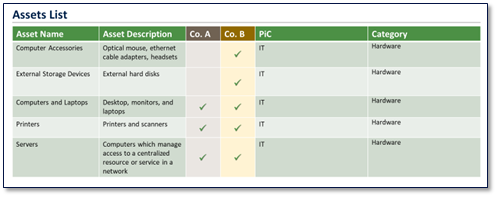

The final step in the Stonewater Partners 6-Step PMI framework is focused on assessing the current state and ownership of all physical assets, including office space, distribution and production facilities, office equipment, production machinery, IT hardware, and other capital equipment.
Capital expenditure synergies are a major driver of M&A economics, and our approach is laser-focused on capturing all the redundancies, overinvestments in maintenance and inventory, as well as inefficient capital and operating lease structures.
To accomplish this step, we review both companies’ inventory records, facilities blueprints and seating maps, and conduct in-depth interviews with key responsible managers. We capture all this detailed information in our proprietary Stonewater Partners business assets matrix (see Figure 5) and collate it to highlight redundancies, deficiencies, or risks.
“Our approach is laser-focused on capturing all the redundancies and overinvestments left after the merger”

Figure 5. Stonewater Partners Business Assets Matrix
We then use the asset matrix to design the future-state asset base for the combined company. This includes creating consolidated inventories, revising office layouts and seating charts, and consolidating assets, as appropriate, under one legal entity and a single departmental owner.
Interested in learning more? Find the next article in this series, “Key Success Factors in a Post-Merger Integration”, here.